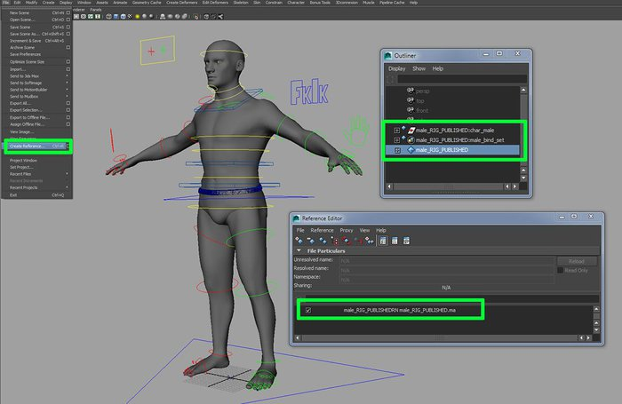

Introduction to rigging in Maya - Part 12 - Final part

Tutorial assets
Click here to download assets to accompany this tutorial
Previous chapters
Maya rigging: Introduction to rigging
Maya rigging: Introduction to rigging a human torso
Maya rigging: Introduction to rigging the neck and the head
Maya rigging: Introduction to rigging the shoulder and the arms
Maya rigging: Introduction to rigging the hands
Maya rigging: Introduction to rigging the legs
Maya rigging: Introduction to rigging the feet
Maya rigging: Introduction to rigging the fingers and thumbs
Maya rigging: Introduction to cleaning up the rig
Maya rigging: Introduction to skinning
Maya rigging: Introduction to corrective blend shapes
We now come to the final part of this Introduction to Rigging series in Maya. Here we will add a couple of extra features and prepare the rig to be passed on to the animators. The features we will add include adding space-switching to the FK arm and leg controls (as we have done for the head in the past), and also adding the ability to translate the jaw. We'll also look at adding an attribute that allows us to switch between the low resolution mesh and the medium resolution mesh, and using nCloth to drive the pants. After this, I'll give a brief overview of how you could approach the face (a huge topic of its own). I'll finally look at how we can set up a workflow that allows the animator to reference in the animation rig to his/her scene file which will allow us, the riggers, to make updates to the rig during the animation process, if required.
Adding the finishing touches in Maya
A quick deformation test of the final rig
Space-switching for the arms and legs
As we did for the head and the eyes, let's add a feature that allows the animator to decide how the FK arm and leg controls should follow the body. Start by creating 4 locators (Create > Locator) and increase the Local Scale in the Channel Box to make them more easily selectable. Rename the locators: l_armShoulderFollow_loc, l_armTorsoFollow_loc, l_armCOGFollow_loc and l_armWorldFollow_loc. Select all 4 locators and parent them all under l_upperArm_FK_ctrl, zero out the Translate and Rotate values in the Channel Box to snap them into place, and then un-parent them.
Now, select in this order; l_armShoulderFollow_loc, l_armTorsoFollow_loc, l_armCOGFollow_loc and l_armWorldFollow_loc and then l_upperArm_FK_ctrl_auto and go Constrain > Orient. We now want to parent the 4 locators under the relevant control so we get the desired behavior. So, parent l_armShoulderFollow_loc under l_shoulder_ctrl, l_armTorsoFollow_loc under chest_IK_ctrl , l_armCOGFollow_loc under COG_ctrl and lastly, l_armWorldFollow_loc under follow_loc_grp.

The 4 locators placed at the same position as the l_upperArm_FK_ctrl
Let's add an extra attribute now to drive the behavior of the arm. Select l_upperArm_FK_ctrl and go Modify > Add Attribute. Give it a long name of armFollow. Set the Date Type to Enum and add the following Enum names: shoulder, torso, COG and world. Now go Animate > Set Driven Key > Set and load l_upperArm_FK_ctrl as the Driver object. Then, under l_upperArm_FK_ctrl_auto, you will find the l_upperArm_FK_ctrl_auto _orientConstraint node that we need to be driven. Select that node and hit Load Driven. With l_upperArm_FK_ctrl selected, set the Arm Follow mode to shoulder.
Then select the l_upperArm_FK_ctrl_auto _orientConstraint node, set the L Shoulder Follow Loc W0 to 1 and the remaining weights (W1, W2 and W3) to 0. Back in the SDK window, hit Key. Now set the Arm Follow mode to torso, set the L Torso Follow Loc W1 to 1 and the remaining weights (W0, W2, W3) to 0. Do the same for the COG and the world modes, and you should be good to go. Repeat the step for the right arm and then both FK leg controls. For the leg, I also created 4 locators, parented under hip_FK_ctrl, hip_IK_ctrl, COG_ctrl and follow_loc_grp and added the extra driving attribute under l_upperleg_FK_ctrl and r_upperleg_FK_ctrl.

Driving the behavior of the FK arm controls using the Set Driven Key tool
Adding translation to the jaw
Next, I'd like to add a bit more flexibility to the jaw by adding the ability to translate it. Select jawA_ctrl and in the Channel Box, go Edit > Channel Control. Scroll down and highlight Translate X, Translate Y and Translate Z and hit the Move button. The attributes will be locked so highlight them in the Channel Box, hold down the RMB and go Unlock Selected. Now select in this order, jawA_ctrl, jawA_jnt and go Constrain > Point. The control should now drive both the rotation and the position of the jaw allowing you to make more interesting poses.

Adding translation controls to the jaw
Controlling the resolution
At the moment, we have a low resolution mesh (the chopped up geo, parented to the skeleton) and a medium skinned mesh. Switching between the two requires that we enable and disable the Display Layers we currently have them placed in. Although we could stick to the current method we have, I want to add an attribute that allows me to make the switch.
Start by selecting COG_ctrl and go Modify > Add Attribute. Give it a long name of resolution, set the Data Type to Enum and add the following Enum names: lowRes, and midRes. Now open up the SDK window (Animate > Set Driven Key) and load the skinned mesh (including nails and eyes) as the Driven objects. Select COG_ctrl and set that control as the Driver object. Set the resolution attribute on the COG_ctrl to midRes and in the SDK window, highlight Resolution in the top-right box, highlight all the driven objects in the bottom-left box and highlight visibility in the bottom-right box. With those objects and attributes selected, hit Key on the SDK window. Now set the resolution attribute to lowRes, set the visibility to the skinned geometry to off and hit Key once more on the SDK window. Do the same for the low resolution geometry, turning the visibility on when set to lowRes and off when set to midRes.

Driving the resolution of the mesh using a custom attribute
Pants and nCloth
To set up the pants, I've decided to use nCloth. You could skin the pants or use a Wrap Deformer but the results from both methods are rather, well… pants. Although nCloth will be heavier on the scene, it will also create some interesting folds and creases as our character articulates. The first thing we should do is check the geometry of the pants. We want the edge loops to be as evenly spread as possible. I ended up using the Sculpt Geometry Tool with the Mode set to Relax and evened out the edge loops between the legs. Once you've cleaned up the edge loops, increase the resolution of the pants by going Mesh > Smooth (Options) and setting the Division levels to 1. The mesh beforehand was a little coarse and this should give better results, although it will naturally take longer to simulate. Before adding the cloth node, also delete the history from the pants (Edit > Delete by Type > History).
As the pants will be driven with nCloth, we need to set our playback speed to play every frame. Do so by holding down the RMB over the Timeline and going Playback Speed > Play Every Frame or Play Every Frame, Max Real-time. Now switch to the nDynamics menu set, and with the pants_geo selected, go nMesh > Create nCloth. Give yourself a few hundred frames on the Timeline and hit Play (Alt+V) to view the results. Depending on the spec of your machine, you may find that it takes a while to simulate and so viewing the results is tedious. If so, create a playblast to get a better idea of the behavior of the cloth by holding down the RMB in the Timeline and going Playblast.
If you hit play now, you'll probably find that the pants will start to fall down and reveal more flesh that you probably wish to show. To stop this, we'll use an nConstraint. Start by selecting a few edge loops around the waist of the pants. With these edges selected, go nConstraint > Transform. If you hit play now, you'll find the pants stay fixed. Add some animation to the hips though and you'll notice that they do not follow the motion of the hips. To fix that problem, simply take the dynamicConstraint1 node in the Outliner and parent it under hip_FK_ctrl.
The next thing we want to do is play with the properties of our cloth. Currently, it feels a little too loose. If you select the nCloth1 node in the Outliner and open up the Attribute Editor, you will find a whole heap of attributes to refine the behavior of the cloth in the nClothShape1 tab. We're not going to go into any detail here as this is beyond the remit of this tutorial but if you did wish to find out more, check out the Maya Help files (F1) which are pretty thorough. Luckily for us, we can simply use one of the Presets to quickly block out how we would like the pants to behave. Navigate to the nClothShape1 tab in the Attribute Editor and you'll notice a Preset button in the top-right corner. Hit that button and select thickLeather. It might sound odd but it pretty much gave me the results I was after. Have a play with the presets and see what works for you as I am in no position to dictate your underwear choices, CG or otherwise. If you scroll down to the Notes section in the Attribute Editor, you can get a few tips on how to refine a particular preset.
The cloth setup will dramatically affect the speed of your playback so remember to hide the geometry and the cloth nodes while animating.

Using nCloth to get better results from the pants
Rigging the face – overview
Rigging the face is an entire beast on its own and demands its own series of tutorials. I did, however, want to give you a few ideas of how you could approach the face should you want to take this rig further. Now as with everything, I don't ever think there is only one way to achieve a task, so please do experiment and test out different ideas.
One method to rig the face would be to use blend shapes. As you pretty much sculpt each face shape, you will very easily be able to get a clear idea of what the final poses of the face will be. Plus, if you have multiple animators working with the rig, the poses they will use will be consistent between the shots. One of the downsides of using blend shapes is that the transition from one blend shape to another is very linear and therefore, creating natural arcs is tougher. For the opening and closing of the jaw, depending on how large the eyes are, it may be best to use joints as they create the natural arcs very easily.

Creating a joint-based face rig and adding the joints to our current skinCluster
Next, you could use a joint-based setup. This is where joints will be placed around the face (usually at muscle insertion/origin points) and those joints will be translated, rotated and scaled to create the poses. The problem with this method is that unless you create a library of set poses (similar to the fingers), you may get inconsistency between the poses from different animators. The positive is that you can create some very fine movements very easily and add asymmetry to the poses very quickly.
I find a combination of both methods works best: using blend shapes to get a consistent set of poses and then using joints/clusters on top to refine the poses. Or maybe try a joint-based setup with extra blend shapes added to push the face further. Either way, as long as the face rig allows the animator to hit the poses required and it fits the needs of the medium (game, film, TV, etc), it shouldn't be too much of a problem. As you create the rig for the face though, remember to keep looking at your own face and how it articulates. For example, look at how the opening of the jaw creates movement around the temple region, or how moving the eyes around takes with it the surrounding skin. And without a doubt, have a good look at the work of Dr. Paul Ekman and his FACS (Facial Action Coding System) research.

Painting some weights on the newly added joints to deform the face
Referencing
Referencing is not really a rigging feature or technique, but more of a way of being able to send our assets through a production pipeline while having the ability to make changes along the way. In our current case, it would be a way to pass our rig on to the animator, let them do their thing and should any extra features need to be added to the rig, we can add them, update the rig and the animator can carry on working without losing the work they have done so far. Unlike opening a file or importing a file, referencing simply points to a file. Therefore, any changes that are made to the referenced file will be passed on to the scene file that calls it in.
Let's do a working example so you can get a better example of how much it can benefit you to use this workflow. Start by taking the most up-to-date scene file you have and save it as male_rig_wip1.ma (this will be a backup file that we can always come back to). This file should also contain all the blend shape meshes so we can come back and update them should we need to. The scene file we just saved is around 234MB and all this data is not needed by the animator. Now delete the correctives_geo_grp which you'll find under the male_geo_grp. This will get rid of all the geometry used for our blend shapes. Resave this scene file as male_RIG_PUBLISHED.ma and have a look at the file size. My file ended up being 29.8MB. This is the file that the animator will reference in their scene to work on and being a lot lighter, it should also have a bit more spring in its step.
Let's be the animator now. In a new scene, go File > Create Reference and select male_RIG_PUBLISHED.ma. With the file referenced in, open up the Outliner and you will notice blue diamond icons, indicating that this is a referenced asset. You can also go File > Reference Editor to see where the file is being called in from. With the rig in the scene, set a few keys to create a quick animation. Try and pop the rig into a problem pose that needs fixing and then jot down the controls and the values that got it into that pose. Save this scene file as male_anim_v1.ma.
Now be the rigger once more. Open up the male_rig_v1.ma file and pop the rig into the same problem pose that you used in the animation file. Like we did in the last tutorial, use the BSpiritCorrective.mel script to create a corrective fix for that pose. Remember to disable any active blend shapes before duplicating the mesh so it does not freak it out when we re-apply the extra corrective shape. With the new corrective pose added to our ‘correctives' blend shape node, save the scene file as male_rig_v2.ma. Delete all the blend shapes from the scene again and resave the scene file as male_RIG_PUBLISHED.ma, over-writing the existing file.
Pop your animator hat back on again and re-open male_anim_v1.ma. You'll find that all your animation has stayed intact and you should also have the extra corrective blend shape living on the ‘correctives' node, ready to use. This is just one instance of how referencing can be used. Another example would be to pass on the current rig and then add the face rig later on. An important note to mention is that adding new attributes or features should be fine when using referenced files. However, taking away a feature that an animator has keyed or restructuring part of the rig may have pretty damaging effects.
Hopefully this has given you an idea of how referencing can be used. Remember though, always run a few tests to see what is and what is not possible. That way, you'll know what you can and cannot do.
So here endeth the rigging lesson. Go forth and rig!
Referencing your rig
Adding the finishing touches in Maya
A quick deformation test of the final rig
Top Tips
Adding breathing controls and jiggle
When a digital character stops dead in its tracks, the illusion of this character being alive will be broken. Another giveaway I find is when a character does not seem to breathe. To bring a bit more life to our character, why don't you add an attribute that does just that? For the final file (07_finalFile_withBlendShapes.ma), I ended up adding a blend shape where I used the Sculpt Geometry Tool to push the chest region out ever so slightly along the normals. An expression was then used to drive the blend shape using a couple of custom attributes on the chest_IK_ctrl. The Breath Speed attribute drives the speed of the blend shape while the Breath Size, as the name suggests drives the size. Check out the Expression Editor to see how I hooked this up and simply hit Play to see the effects. Rather than using blend shapes, you could get a similar result by adding extra joints to the chest region.

The custom attributes that drive the breath blend shape and the expression created hook everything together
Next, I wanted to add a bit of jiggle to areas such as the belly, the chest, the bottom of the arms, the buttocks, the thighs and the calf region. If you go Create Deformer, you will actually find a Jiggle deformer that can be used for just that. Instead of using this deformer, I've gone and added a Muscle System Skin Deformer node to the mesh and used the jiggle found here. To do the same, with your mesh selected, go Muscle > Skin Setup > Apply Muscle System Skin Deformer. When the Setup for Relative Deformation? window pops up, hit Yes. In the Channel Box (or the Attribute Editor), click on the cMuscleSystem1 node. Now scroll down to JIGGLE and turn on Enable Jiggle.
With the mesh selected, go Muscle > Paint Muscle Weights. When the window pops up, set the mode to Jiggle and paint the regions where you would like the jiggling to take effect. Test out the jiggling effects by popping some animation onto the controls to pose the mesh. If you are finding that there is too much or too little jiggle, have a play with the Jiggle Max value (which is currently set to 0.5). If you are finding that the playback speed is really affected, you may want to disable the Jiggle attribute. I've reduced the Jiggle Max value to around 0.2. This is mainly becomes I want to keep the jiggle pretty subtle. If he was a fella with a few rolls around the waist, I'd probably crank this value up a little more. Have a good experiment to see what works for you. Like the cloth setup, remember to turn the JIGGLE setting off while animating as this will affect performance.
If you find that you cannot see the muscle menu, go Window > Settings/Preferences > Plug-in Manager. Look for MayaMuscle and hit the Loaded and Auto Load check boxes.

Using the paint tools to decide which areas need to jiggle a little more